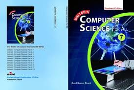

Application Of Computer
Computer is used in different sector.All the people used computer for their respective work.computer is used in:
In home
Computer is used in home to prepared personal document,listen music,watchmovie and play computer game.
In Office
Computer is used in office to keep the record of employees, prepare official document and communication with others.
In Entertainment

Computer is used in entertainment to listen music, watch movie, and plays game.Flim producer also used computer to animate the movie and a music composer use the computer to compose music
In Bank

Computer is used in bank to keep the record of costumer, to calculate simple intrest and to prepare balance sheet.Now a days, most of the bank provide ATM service to their costumer to withdraw money.
In buisness

Computer is used in buisness for buisness communication, training, and advertisement.It is also used to prepared the buisness related document.
In publication
Computer is used in publication to design the book, newspaper, magazine, booklets and print the document.